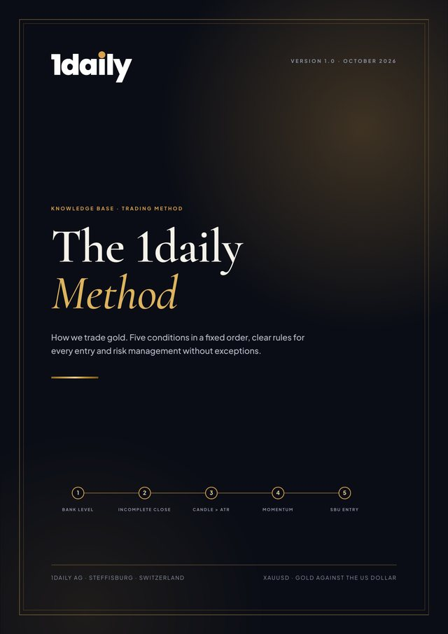

01
Structure over chaos
Every setup, entry, stop-loss and target is defined before an order is placed. Goldcheck signals are a basis for decisions, never a substitute for our own judgement on the chart.
This is how we trade gold: with a fixed set of rules that follows institutional capital rather than gut feeling.
Each condition builds on the one before. The first two prove that liquidity has been taken, the next two confirm the change of direction, and the fifth defines the precise entry. If one is missing, there is no trade.
An institutional price zone: a round number or the previous day’s, week’s or session’s extreme.
The candle pierces the level but closes back inside the range. Proof of the sweep.
The counter-candle is larger than the average range. Proof of real pressure.
Volume, order flow and oscillators confirm the new direction.
Limit order in the untested zone, stop beyond the sweep, target at the next bank level.
TradeOnly when all five conditions are met. Entry, stop-loss and target are set before we enter.
Every setup, entry, stop-loss and target is defined before an order is placed. Goldcheck signals are a basis for decisions, never a substitute for our own judgement on the chart.
No single trade decides anything. Over a series, what counts is applying a rule set with positive expectancy consistently. A loss is a planned operating cost, which is why a stop-loss is never moved.
Revenge trading, larger positions after losses, entries driven by fear of missing out and closing winners too early all cost measurable money. We record them in our trading journal and replace them with rules.
The goal is execution that feels calm and almost boring.
Gold moves systematically from one liquidity zone to the next. Bank levels are price zones where large market participants, central banks and algorithms find enough volume to build positions without moving the price against themselves.
They include round numbers such as USD 4,000 or 4,050 and structural extremes: the previous day’s high and low, the weekly high and low, and the extremes of the Asian session. Stop and breakout orders cluster behind them. For large players, that is liquidity.
The weekly Commitments of Traders report from the CFTC also shows how strong a long-term level is. When commercial hedgers cover their short positions while speculative funds capitulate, a high-quality floor forms.
RuleNo trades in no man’s land on the chart.
When gold reaches a bank level, we wait for an incomplete candle close. The candle pierces the level, usually on M15 or M30, but closes back inside the previous range, leaving a long wick behind.
Behind it is an imbalance in the order book: breakout buyers and triggered stops supply buy orders that are absorbed by large sell limits at the level. Whoever bought the breakout is trapped, and their later exit fuels the move in the opposite direction.
RuleAlways wait for the candle to close. Piercing a level alone is not a sweep and may be a genuine breakout.
The candle moving away from the level must be larger than the Average True Range. The ATR measures the average trading range of the last 14 candles, including gaps and regardless of direction.
Because gold’s volatility varies sharply by time of day, this filter adapts automatically: small in the Asian session, large at the New York open. A valid candle has a large body, small wicks and breaks local swing structure. Retail traders cannot move the price like that.
RuleIf the candle is smaller than the ATR, institutional pressure is missing. We stay on the sidelines.
The ATR measures how far price moves. Momentum shows how fast and on what volume. Genuine moves after a sweep show tick volume well above average, and the cumulative delta, the difference between aggressive buying and selling, points clearly in the new direction.
RSI and MACD help with divergences: if price makes a new high during the sweep but the RSI does not, weakness shows early. The 20 and 50 EMAs align the trade with the broader flow.
RuleA sweep without volume remains suspect. Indicators confirm price action; they never replace it.
The fast break leaves behind zones where hardly any trading took place: fair value gaps and order blocks. Algorithms often bring price back to them to fill open orders before the actual move continues.
Chasing the break candle with a market order means a poor entry and a wide stop. Instead, we wait with a limit order in the untested zone.
RuleIf price runs away without retracing, there is no entry. A missed trade costs nothing.
Limit order at the edge or at the 50 percent mark of the fair value gap or order block.
A few pips beyond the wick of the sweep candle. If price returns there, the whole thesis is wrong.
The next logical bank level or liquidity pool, such as the opposite daily high or low. Not the first profit.
Trade management is a skill of its own. Closing at the first profit follows fear, not the plan.
Around US jobs data (NFP), inflation figures (CPI) and US Federal Reserve decisions (FOMC), liquidity providers briefly step back. Spreads widen, and candles of 50 to 100 pips within seconds are possible. The first spike often just takes out a bank level and then reverses.
Rule of thumb: US data better than expected usually strengthens the dollar and bond yields and puts pressure on gold. There is never certainty.
A correct market view is worthless if risk management fails. That is why fixed limits apply, enforced technically by RiskGuard by 1daily.
A stop-loss is never moved or widened.
No larger positions to win back losses.
Trading stops immediately when tired, frustrated or stressed.
Provides the context the method requires: technical picture, institutional factors such as VWAP and volume, macro drivers such as the dollar and US yields, and event risks. The result is a signal from Strong Sell to Strong Buy with a confidence score, or “No Trade” when uncertainty is high.
Checks the five conditions on the chart, sets entry, stop-loss and target, and decides. Responsibility for every trade stays with the person.
Enforces the risk rules technically: risk per day, mandatory stop-loss, position limit, a block around economic news and a pause after losses.

All five components in detail, with charts, worked examples, a daily routine, a checklist and a glossary. To read, print and share.
PDF, 1.3 MB · Version 1.0, October 2026
The strength of the method is not in spotting the five conditions, but in executing them hundreds of times without deviation.